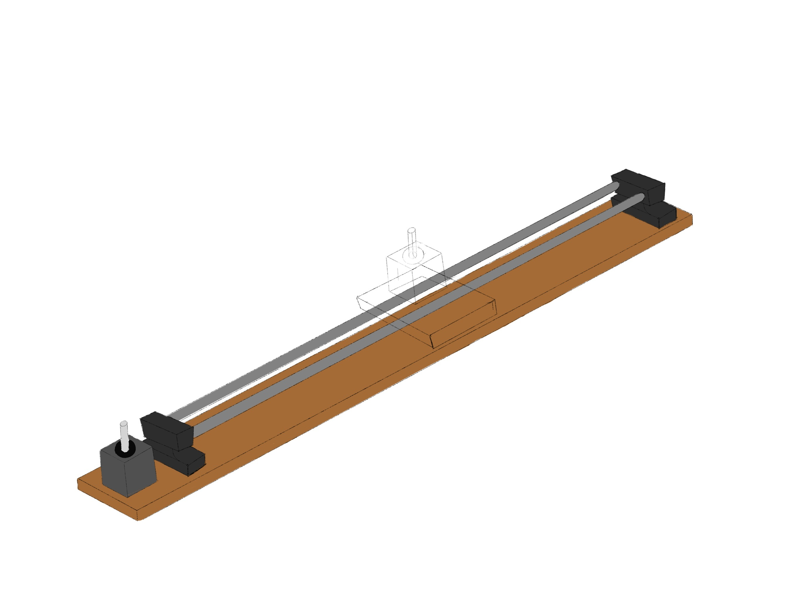
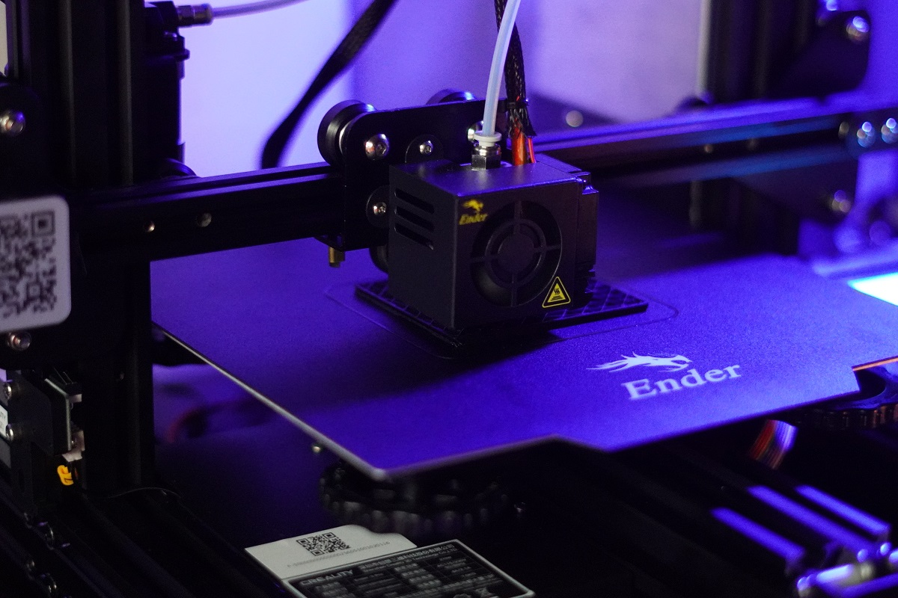
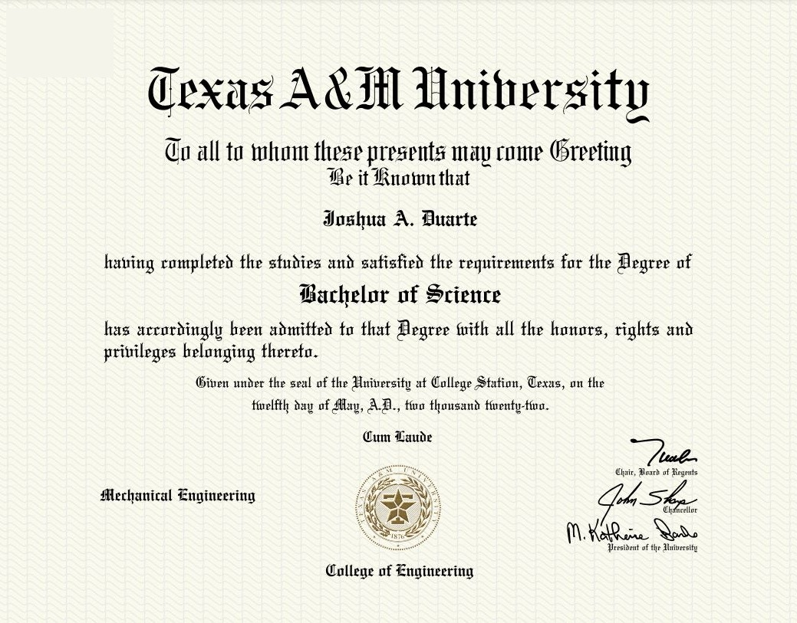

Today was all about getting back into the groove of things. From working out, journaling, to working on some personal projects, I was able to have a very productive day. Ultimately, I hope every day is something like today with a bit more of a mix in on the social spectrum. But I'm not too sure if that'll be possible. How's that one thing go? You know, the thing you would see during the school year. You can choose two. Enough Sleep, Good Grades, or a Social Life. Yeah, that's kinda what I have to go through but with different choices in a sense.
I also got one of the bigger things in my life today. My diploma. It's crazy to think that I spent 4 years at A&M. Now, I have to go through another year at Berkeley to earn that second diploma. I am sure it will be over before I know it.
Sign Language Trainer
As I continue working to make an enjoyable sign language trainer, I have to continue to work at becoming more familiar with gesture recognition scripts. In doing so, I used more of the commands that are available within the libraries that I am using. These commands allowed me to pinpoint specific spots on my hand (the end of my thumb and pointer finger) and construct a line between them. Here, with some simple arithmatic, a point was established at the center between my indices. When my fingers came close enough together, the point would turn green. It was pretty neat.
Getting a Hang of ThisAlthough I would love to say that I did this on my own, I had the help of significant google searches and some Youtube videos. It is pretty crazy what you can learn if you sit down and seek things.
Camera Slider
I finally began another personal project that I have been wanting to do for quite some time. With the familiarity that I have obtained with regards to stepper motors, I thought it was finally time to get it started.
As I may have mentioned before, I have been interested in photography and videography. This project aims to create a camera slider that will be capable of moving rotating, tilting, and moving a camera along an axis. Prior to getting things put into model format, I went ahead and started working on a sketch of the product just as I have instructed those that are also working on a personal project to do.
 Camera GliderTomorrow, I will complete the sketch and start modeling some of the known parts like the base board, stepper motors, and rods I am going to use. There's no way I am going to model the camera as it would take me far longer than I would like, so I hope to find a model online somewhere that I could use.
3D Printing
As I hope to use this bad boy on some of my personal projects within the coming weeks, I decided to put it through further testing with some random prints that may benefit me. This here is the start of a phone holder that I downloaded off of thingaverse (sorry Kevin, I promise I will use yours once you finish designing yours). I hope to learn something if it fails or how I could go about improving the quality.
 Print TestGoogle Cloud Certification
Looks like I may have to abide by some set schedule this summer afterall. I was blessed with the opportunity to be a part of the inaugural cohort of the SHPE Google Cloud Certification Course. It will span over the next 8 or so weeks where I will have the chance to become certified in Google Cloud. I am excited to learn a thing or two in this realm.
Let's See What Doors Open4 Years for this...
It was a long 4 years of sleepless nights, head-banging against hard surfaces, and lessons learned, but I made it. This first generation student finally made it. I finally earned my B.S. in Mechanical Engineering from Texas A&M University. Thank you for everything.
 $120,000 Sheet of PaperHabit Tracking
Today, I journaled, worked out, read, tracked my caloric intake, and worked on at least one of my personal projects. Today was a good day.
What I am thankful for
I am thankful for my tendency to be curious. It has opened doors that I could have never imagined.
Learning is a treasure that will follow its owner everywhere. Do More. - J.D.